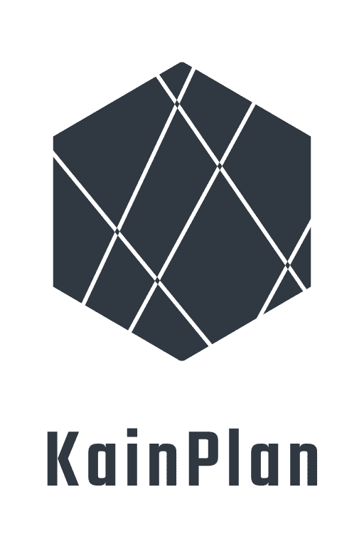

Unsere Schule - kartografiert
Moderne Navigationssoftware, die Ihnen hilft, immer den richtigen Pfad durch unser Schulgebäude zu finden.
Neue Aspekte der Schule entdecken - mit KainPlan
Seitdem wir KainPlan verwenden, haben wir uns nie wieder verlaufen!Hänsel und Gretel, 2019
Eine UI so minimalistisch - sogar die Schulkatze könnte sie verwenden
Verringert die Anzahl benötigter sozialer Interaktionen um das Ziel zu erreichen